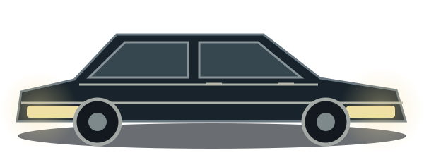

МАЛЕНЬКОЕ ПУТЕШЕСТВИЕ. ТОЛЬКО ДЛЯ ТЕБЯ.
Твоя
вселенная✧
Все, кого ты любишь.
Все миры, в которых хочется остаться.
✦ Нажимай на героев — у них есть кое-что для тебя
01 / ТАМ, ГДЕ ВСЕГДА ВЕРЯТ В ТЕБЯ
Твоё внутреннее
солнце.
Даже самый долгий путь начинается
с мечты. И человека, который рядом.
02 / НЕМНОГО ПРЕКРАСНОГО БЕЗУМИЯ
Влюбиться
в хаос.
Быть собой. Смеяться слишком громко.
И раскрашивать этот город по-своему.
03 / У КАЖДОЙ ТАЙНЫ ЕСТЬ СВОЯ МАГИЯ
На тёмной стороне
тоже есть свет.
Некоторые миры чуть загадочнее других.
Но здесь даже тьма хранит для тебя чудо.
04 / ПО ТУ СТОРОНУ СТЕН
У твоей свободы
есть крылья.
За горизонтом всегда есть что-то большее.
Мечтай смелее. Твой мир не знает границ.
05 / СТРАННЫЕ ИСТОРИИ В СУМЕРКАХ
У каждого страха
своя история.
Старая ферма, шорох травы и огонёк вдали.
Немного мурашек — для любительницы тайн.
06 / НЕОЖИДАННЫЙ ЗВОНОК ПОСЛЕ ПОЛУНОЧИ
У тишины
тоже есть голос.
Пустая улица. Свет в окне. Телефонный звонок.
И знакомая маска по ту сторону ночи.
07 / ЭТОТ ВЕЧЕР ПРИНАДЛЕЖИТ ТЕБЕ
Рождена,
чтобы сиять.
Больше блеска. Громче музыка.
И никаких сомнений: ты — главная звезда.
08 / ЧЕТЫРЕ ГОЛОСА. ОДНО НАСТРОЕНИЕ.
На частоте
твоих чувств.
Розовый неон, ночной город и свой ритм.
Для всего, что иногда проще выразить музыкой.
09 / ДОРОГА ДЛИННЕЕ ЛЮБОЙ ЛЕГЕНДЫ
Пока мы вместе —
тьма отступает.
Два брата. Старая «Импала». И новый поворот.
В этой истории тебя всегда есть кому защитить.

САМАЯ ВАЖНАЯ ЧАСТЬ ЭТОЙ ИСТОРИИ — ТЫ
И все эти миры —
часть твоей вселенной.
А самое прекрасное в ней — ты сама.